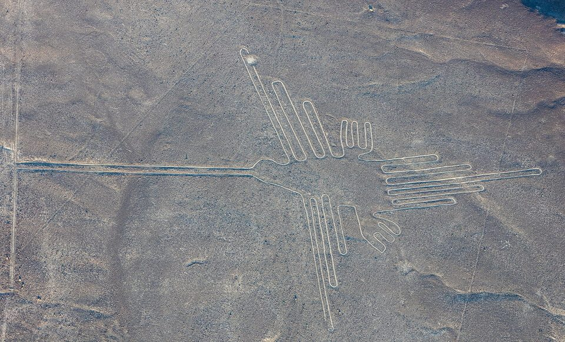
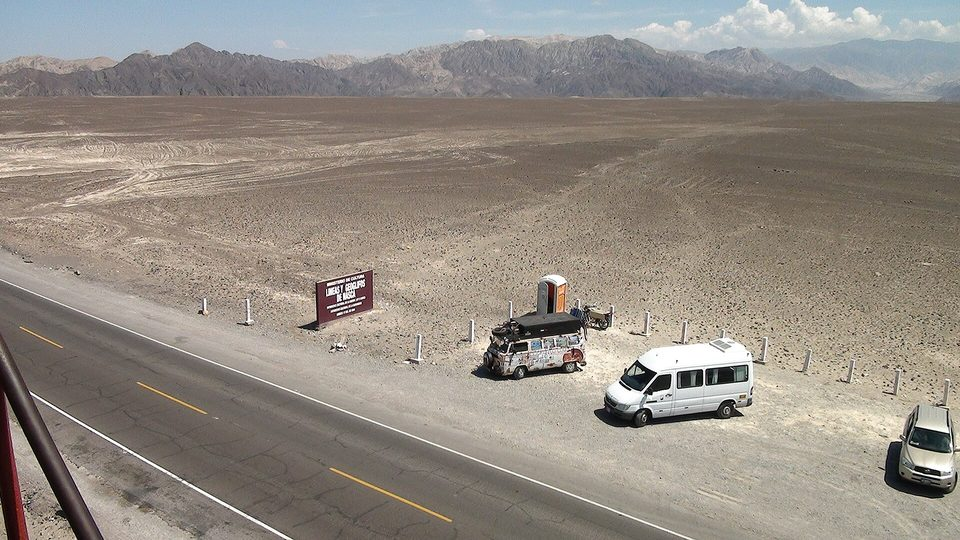
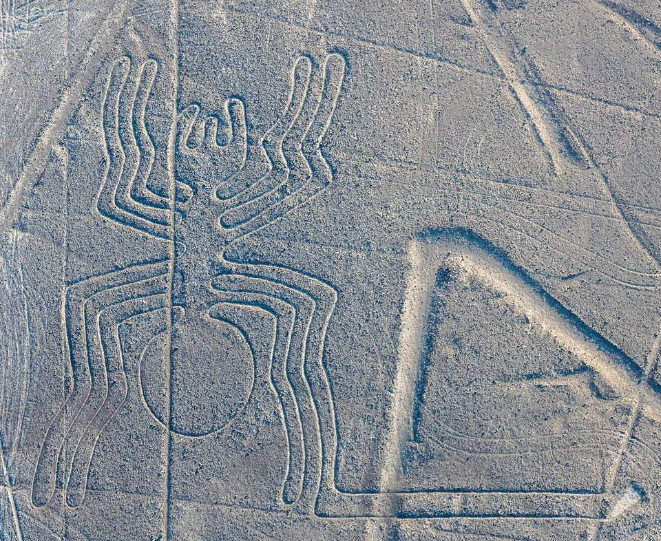
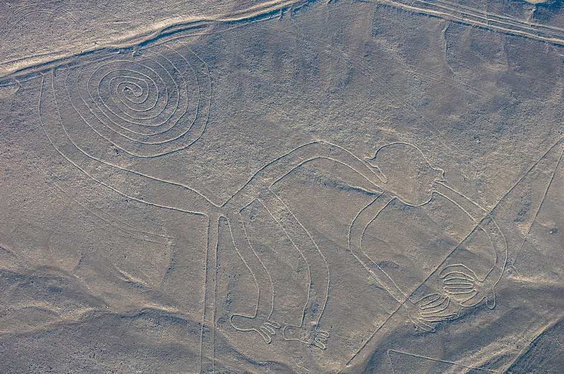
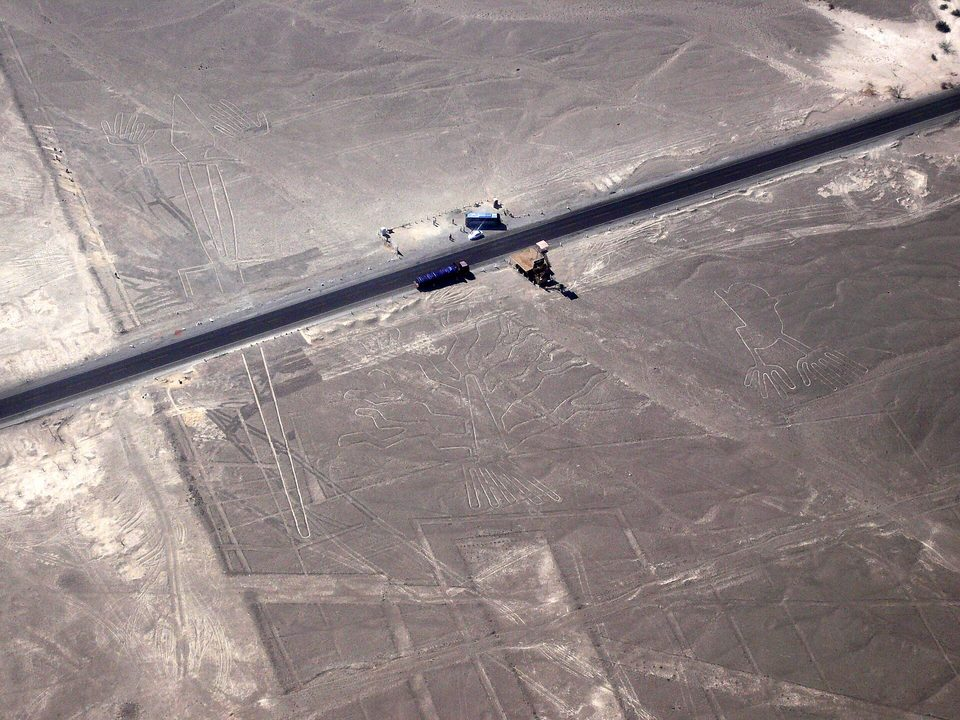

As Linhas de Nazca — desenhos que só fecham de longe
Ninguém escavou nada ali. Bastou tirar as pedras escuras do caminho e empilhá-las nas bordas, para que aparecesse um sulco claro de poucos centímetros. Repetido por quilômetros, num deserto onde quase não chove, isso durou dois mil anos — e virou o enigma mais visto do alto em toda a arqueologia.
- Onde
- Pampa de Nazca, região de Ica, Peru
- Época
- ≈ 500 a.C. – 500 d.C.
- Quem fez
- culturas Paracas e Nasca
- Área dos traçados
- ≈ 450 km²
- Figuras conhecidas
- 893 (2025)
- Patrimônio Mundial
- 1994
Entre os rios Ingenio e Nazca, na costa sul do Peru, há uma meseta plana e seca a uns quatrocentos quilômetros de Lima. O chão é coberto por um cascalho de pedras avermelhadas, escurecidas por uma pátina de óxido de ferro que leva séculos para se formar. Debaixo dessa camada, o solo é amarelado e claro. É toda a matéria-prima de que as linhas precisaram.
Quem atravessa a pampa a pé vê pouca coisa: faixas mais claras que somem no horizonte, montinhos de pedra, trilhas que se cruzam. Quem sobe num morro ao lado começa a perceber que as faixas são retas demais para serem caminhos comuns. E quem voa por cima, a algumas centenas de metros, vê um beija-flor, um macaco, uma aranha, uma baleia, um condor — e uma malha de retas, triângulos e trapézios que atravessa tudo.
Essa diferença de ponto de vista é o centro da história. Ela alimentou um século de teorias, algumas sérias e outras fantasiosas, e só em 2024 ganhou uma resposta mais fina: nem todos os desenhos foram feitos para o mesmo olhar.

01O que está no chão
Os pesquisadores dividem o que existe na pampa em três famílias. As retas, que são a maioria: faixas que vão de algumas dezenas de metros a vários quilômetros, muitas vezes partindo de um mesmo morrinho como os raios de uma roda. As figuras geométricas — trapézios, triângulos e espirais, alguns com centenas de metros de comprimento e área de campo de futebol. E os desenhos figurativos, os bichos e plantas que ficaram famosos, que são minoria e ocupam uma parte pequena da área total.
A técnica é sempre a mesma, e é de uma economia notável. Afastam-se as pedras escuras da superfície, que se acumulam em pequenas bordas nos dois lados; o que fica exposto é o solo claro de baixo. Os sulcos têm em geral de dez a quinze centímetros de profundidade, e mais da metade das linhas tem pouco mais de trinta centímetros de largura. Nada foi cavado no sentido próprio, nada foi construído. O desenho é uma diferença de cor.
O que fez essa diferença durar é o lugar. A região está entre as mais secas do planeta, com chuva rara e vento que, rente ao chão, quase não arrasta o cascalho. As pedras escuras absorvem calor e criam uma camada de ar mais quente sobre a superfície, que ajuda a proteger o desenho. É uma conservação frágil: um pé ou um pneu fazem num minuto um risco que a natureza não apaga em séculos.
02Quem riscou e quando
A cultura Nasca ocupou os vales da costa sul peruana mais ou menos entre o século I antes de Cristo e o século VII depois de Cristo. Era uma sociedade de agricultores em vales muito secos, famosa pela cerâmica policromada e por galerias subterrâneas de captação de água, os puquios, que alguns pesquisadores atribuem a ela e outros a épocas posteriores. O grande centro cerimonial foi Cahuachi, um conjunto de montes de adobe à beira do rio Nazca, a poucos quilômetros da pampa.
Antes dela houve a cultura Paracas, que já riscava figuras — sobretudo nas encostas dos morros, de modo a serem vistas de baixo. É a essa fase que se atribuem o "gato" achado em 2020 num declive, quando se abria uma trilha de acesso a um mirante, e boa parte das figuras humanas de Palpa, ao norte.
Datar um sulco no chão é difícil, porque não há material orgânico dentro dele. A cronologia vem de evidência indireta: fragmentos de cerâmica quebrados sobre as linhas e nos montes de pedra das extremidades, cujo estilo tem data conhecida; a semelhança entre os bichos do chão e os que aparecem nos vasos e tecidos nasca; e a ordem em que um traçado corta o outro. O resultado é a faixa que a UNESCO adota, de cerca de 500 antes de Cristo a 500 depois de Cristo, com as figuras de encosta mais antigas e as grandes retas e trapézios mais tardios.
03Quem viu primeiro
Os traçados nunca estiveram escondidos. O cronista espanhol Pedro Cieza de León mencionou em 1553 sinais no deserto que tomou por marcos de caminho. Quem os tratou pela primeira vez como objeto de estudo foi o arqueólogo peruano Toribio Mejía Xesspe, colaborador de Julio C. Tello, que os percorreu a pé em 1927, olhando dos morros. Ele os interpretou como caminhos cerimoniais e apresentou a ideia num congresso em Lima em 1939 — antes de qualquer fotografia aérea famosa.
O impulso seguinte veio do historiador norte-americano Paul Kosok, que estudava irrigação antiga na costa peruana. Em 1940 e 1941 ele percorreu a pampa e, segundo o relato que ficou célebre, viu o sol se pôr no prolongamento de uma das retas no dia do solstício de inverno do hemisfério sul, em junho de 1941. Foi Kosok quem reconheceu o desenho de um pássaro entre as linhas e quem lançou a ideia de que a pampa fosse "o maior livro de astronomia do mundo".
Quem herdou o trabalho foi uma tradutora e professora alemã que o acompanhou: Maria Reiche, nascida em Dresden em 1903, no Peru desde 1932. A partir de 1946 ela se dedicou à pampa quase sozinha — medindo com trena, varrendo sulcos para torná-los visíveis, mapeando figuras que ninguém tinha desenhado. Publicou The Mystery on the Desert em 1949 e passou o resto da vida defendendo a hipótese astronômica.
A teoria dela envelheceu mal; o trabalho de preservação, não. Reiche pagou vigias do próprio bolso, conseguiu da Força Aérea peruana voos para fotografar a pampa, financiou a torre de observação à beira da rodovia Pan-Americana e insistiu durante décadas em restringir o acesso de carros. Morreu em Lima em 8 de junho de 1998, quatro anos depois de as Linhas e Geoglifos de Nasca e Palpa entrarem na lista do Patrimônio Mundial — uma inscrição para a qual sua campanha contou muito.

04Como foram feitas
A pergunta "como desenharam algo que não conseguiam ver?" tem uma resposta simples, e ela foi testada. Em 1982, o investigador norte-americano Joe Nickell reproduziu o condor de Nazca, com cerca de 134 metros, num campo do Kentucky. Usou o que os nasca tinham: um desenho pequeno, estacas de madeira, cordas com nós para medir, e um esquadro improvisado com duas ripas. A equipe era formada por parentes dele, sem formação técnica. O trabalho levou cerca de um dia e meio, boa parte perdida com chuva, e a fotografia aérea mostrou uma figura muito próxima da original.
O método mais provável é ampliar um modelo pequeno por coordenadas: fixa-se um ponto, mede-se a distância e a direção até o próximo com corda, e assim por diante. As curvas podem ser traçadas com uma corda presa a uma estaca, como um compasso. Restos de estacas de madeira foram encontrados nas pontas de algumas linhas. Para as retas longas, basta alinhar três estacas a olho e seguir em frente — a precisão de quilômetros sem desvio, que tanto impressiona, é a coisa mais fácil de obter com essa técnica.
Quanto ao trabalho, as estimativas apontam para algo ao alcance de grupos pequenos. Afastar o cascalho de uma figura grande é questão de dias para algumas dezenas de pessoas. Ao longo de mil anos, isso explica com folga tudo o que há na pampa, sem nenhuma tecnologia que não existisse na costa peruana da época.

05Para que serviam: as leituras, da mais sólida à mais improvável
Esta é a parte em que a discussão continua viva. As hipóteses abaixo não se excluem todas entre si — várias podem ter sido verdadeiras em épocas diferentes, ou para tipos diferentes de traçado. O peso de evidência indica quanto cada uma se apoia no que foi medido e escavado.
Caminhos para andar, em ritual
A ideia de Mejía Xesspe voltou com força. Muitas figuras são desenhadas com uma linha única, que se percorre de uma ponta à outra sem cruzar a si mesma — o beija-flor e o macaco estão entre elas. As retas e trapézios mostram, em vários pontos, o chão pisoteado e cacos de cerâmica quebrada de propósito, como em oferendas. Em 2012, Clive Ruggles e Nicholas Saunders descreveram na revista Antiquity um "labirinto" de 4,4 quilômetros, de caminho único, cheio de voltas, que só faz sentido para quem anda por ele — e que Ruggles identificou andando.
A leitura mais aceita hoje é que a pampa era um espaço de procissão e cerimônia, usado por grupos que caminhavam pelas linhas, e não uma imagem para ser contemplada de cima.
Água, montanha e fertilidade
Num lugar onde a sobrevivência dependia dos rios que descem dos Andes poucos meses por ano, seria estranho que a água não estivesse no centro da religião. O antropólogo Johan Reinhard reuniu em 1985 dados arqueológicos e etnográficos para propor que as linhas faziam parte do culto às montanhas e às fontes de água. Aveni e Urton observaram que os centros de raios ficam em pequenas elevações próximas de onde a água chega aos vales, e que muitas retas apontam para os cursos d'água.
Uma variante mais específica — a de que as linhas marcariam aquíferos e falhas geológicas subterrâneas, proposta por David Johnson nos anos 1990 — teve repercussão mas não foi confirmada por estudos independentes.
Dois tipos de desenho, para dois públicos
É a proposta da equipe da Universidade de Yamagata, publicada em 2024 a partir das figuras achadas com inteligência artificial (seção 06). As figuras grandes, em linha, mostram sobretudo animais selvagens e ficam ao longo da rede de retas e trapézios: seriam palco de rituais coletivos. As figuras pequenas, em relevo, com cerca de dez metros em média, mostram motivos humanos — pessoas, lhamas domesticadas, cabeças cortadas — e ficam à beira de trilhas estreitas, a uma distância em que um caminhante as vê do chão. Seriam para ser vistas por indivíduos ou grupos pequenos, de passagem.
A hipótese casa com a distribuição observada. Ainda é a interpretação de uma equipe, e depende de que a amostra das trilhas seja representativa.
Um calendário astronômico
É a tese de Kosok e de Reiche, e foi a mais influente por décadas. Em 1968, o astrônomo Gerald Hawkins — conhecido por ter defendido usos astronômicos em Stonehenge — testou com computador 186 linhas contra as posições do Sol, da Lua e de estrelas brilhantes no horizonte da época. Trinta e nove batiam com direções solares ou lunares importantes, mas cerca de metade disso se explicaria por acaso, e figuras iguais em lugares diferentes davam resultados diferentes. A conclusão dele foi que a astronomia não explicava a maioria das linhas.
Isso não descarta que algumas retas marcassem um solstício ou o nascer de uma estrela, como Kosok viu em 1941. Descarta a pampa como um observatório sistemático.
Pistas de pouso para visitantes do espaço
Popularizada por Erich von Däniken no livro Eram os deuses astronautas?, de 1968, a ideia é que os trapézios lembrariam pistas de aeroporto e que as figuras seriam sinais para quem chegava do céu. O próprio chão responde: o solo exposto é macio, e qualquer veículo pesado afunda e deixa marca — como o caminhão de 2018 mostrou (seção 07). Uma "pista" de trinta centímetros de largura, ou desenhada como um macaco, não serve para pouso de coisa alguma.
O argumento de fundo — "ninguém faria algo que não pode ver" — foi respondido pela experiência de Nickell e pelas figuras de encosta que se veem de baixo. E desvia a autoria das pessoas que de fato fizeram as linhas, cujos vasos e tecidos trazem os mesmos bichos que estão no chão.

06Descoberto ontem: o que a inteligência artificial achou
Por oitenta anos, as figuras de Nazca foram encontradas uma a uma — num sobrevoo, numa fotografia, num passeio pela pampa. A Universidade de Yamagata, no Japão, mantém um instituto dedicado à região desde 2012, sob a direção do arqueólogo Masato Sakai, e no fim da década de 2010 passou a trabalhar com a IBM Research. Em 2019 o grupo anunciou 143 figuras novas, uma delas detectada primeiro por um modelo de aprendizado de máquina. Em 2022, mais 168.
O salto veio em 2024. Em 23 de setembro, a equipe publicou na revista Proceedings of the National Academy of Sciences o resultado de uma varredura de toda a pampa com um modelo de detecção treinado em fotografias aéreas de dez centímetros de resolução. Depois de uma primeira triagem, restaram 1.309 candidatos de alto potencial; os arqueólogos foram a campo, conferiram com drone e, em seis meses de trabalho, confirmaram 303 geoglifos figurativos novos. Até então se conheciam 430. O número quase dobrou num semestre.
Os achados são quase todos do tipo pequeno, em relevo — difíceis de ver de avião porque têm poucos metros, estão erodidos e contrastam pouco com o chão. A IA não "descobriu" sozinha: para cada figura real, os pesquisadores precisaram examinar dezenas de sugestões do modelo. O ganho foi de velocidade, estimado pela equipe em cerca de dezesseis vezes.
Em 28 de julho de 2025, no pavilhão do Peru na Expo 2025 de Osaka, Sakai anunciou mais 248 geoglifos, achados nas campanhas de 2023 e 2024 com o mesmo método: 160 figurativos — entre eles figuras humanas, cenas de decapitação e lhamas — e 88 geométricos. Com isso, o total de geoglifos figurativos conhecidos na pampa chegou a 893. A equipe estima que haja mais de mil figuras em relevo ao longo de mais de cem trilhas — o que deixa ainda dezenas, talvez centenas, por achar.
07As ameaças
O mesmo chão que guardou as linhas por dois mil anos as deixa indefesas diante de qualquer roda. A rodovia Pan-Americana, aberta nos anos 1930, atravessa a pampa em linha reta e passa por cima do geoglifo do lagarto, que ficou cortado ao meio. Os mirantes que hoje existem à beira da estrada nasceram, em parte, da tentativa de deixar os visitantes fora do chão.

Dezembro de 2014. Durante a conferência do clima da ONU em Lima, ativistas do Greenpeace entraram na área proibida junto ao beija-flor e estenderam letras amarelas de pano com uma mensagem sobre energia renovável. As pegadas do grupo ficaram marcadas no chão, e o governo peruano abriu processo. A organização pediu desculpas.
Janeiro de 2018. Um caminhoneiro ignorou as placas e atravessou a pampa, deixando sulcos profundos numa área de cerca de 50 por 100 metros e danificando trechos de três retas. Foi detido e liberado; a Justiça não viu intenção.
Maio e junho de 2025. O Ministério da Cultura reduziu a área da reserva arqueológica de 5.600 para cerca de 3.200 km² — um corte de 42%, que mineradores artesanais pediam. Diante da reação de arqueólogos e da imprensa, o próprio ministério anulou a medida dias depois e restabeleceu o perímetro de 2004, anunciando uma unidade executiva para gerir a reserva.
2026. A pressão não parou. Em julho, a imprensa peruana registrou denúncias de mais de 130 plantas de processamento de minério ilegais na região, e o ministério anunciou a limpeza de seis hectares de lixo no setor de Socos, dentro da reserva, pagos com a receita do bilhete turístico. No fim de setembro, uma inspeção do Ministério da Cultura com o Ministério Público e a polícia na Paisagem Arqueológica de Bogotalla–Tulín, no distrito de El Ingenio, encontrou maquinário pesado, acampamento, estradas abertas e a boca de um túnel de mina — a cerca de setenta metros do geoglifo mais próximo. A área tinha sido declarada patrimônio cultural da nação em outubro de 2025.
08Cronologia
- ≈ 500 – 200 a.C.Fase Paracas: figuras sobretudo em encostas, visíveis de baixo, em Palpa e na borda da pampa.
- ≈ 100 a.C. – 500 d.C.Fase Nasca: as grandes figuras em linha, as retas, os trapézios. Cahuachi é o centro cerimonial.
- 1553Pedro Cieza de León menciona sinais no deserto, que toma por marcos de caminho.
- 1927Toribio Mejía Xesspe percorre as linhas a pé e as interpreta como caminhos cerimoniais. Apresenta o estudo em 1939.
- anos 1930A rodovia Pan-Americana é aberta através da pampa e corta o geoglifo do lagarto.
- junho de 1941Paul Kosok observa o pôr do sol do solstício alinhado com uma reta e reconhece a figura de um pássaro.
- 1946 – 1949Maria Reiche começa o mapeamento sistemático das figuras e publica The Mystery on the Desert.
- 1968Gerald Hawkins testa 186 linhas por computador e conclui que a astronomia não explica a maioria. No mesmo ano, von Däniken lança a tese das "pistas".
- 1982Joe Nickell reproduz o condor, em tamanho real, com estacas e cordas, num campo do Kentucky.
- anos 1980Aveni e Urton mapeiam cerca de 800 retas e 62 centros de raios. Reinhard publica a hipótese da água e das montanhas (1985).
- 1994As Linhas e Geoglifos de Nasca e Palpa entram na lista do Patrimônio Mundial da UNESCO.
- 8 de junho de 1998Morre Maria Reiche, em Lima, aos 95 anos.
- 2012Ruggles e Saunders publicam o "labirinto" de 4,4 km feito para ser percorrido. A Universidade de Yamagata abre seu instituto em Nasca.
- dezembro de 2014Ativistas do Greenpeace deixam pegadas junto ao beija-flor.
- janeiro de 2018Um caminhão atravessa a pampa e danifica três retas.
- 2019 e 2022Yamagata e IBM anunciam 143 e depois 168 figuras novas.
- outubro de 2020Anunciado o "gato" de fase Paracas, achado numa encosta durante obras de um mirante.
- 23 de setembro de 2024Artigo na PNAS: 303 geoglifos figurativos novos achados com inteligência artificial em seis meses.
- maio – junho de 2025O governo corta 42% da reserva arqueológica e recua dias depois.
- 28 de julho de 2025Mais 248 geoglifos anunciados na Expo de Osaka; os figurativos conhecidos chegam a 893.
- 1º de agosto de 2026Queda de um avião de turismo que sobrevoaria as linhas deixa treze mortos.
- fim de setembro de 2026Inspeção acha mineração ilegal a cerca de 70 metros de um geoglifo em Bogotalla–Tulín, dentro da reserva.
09O que continua em aberto
Para que servia cada tipo de traçado. Caminho ritual, água, procissão, marcação de grupos: as hipóteses sérias não se excluem, e a pampa foi usada por um milênio. É provável que a resposta seja diferente para uma figura em encosta de Paracas, para um beija-flor nasca e para um trapézio tardio.
Quantas figuras ainda estão lá. A estimativa da equipe de Yamagata é de mais de mil figuras em relevo; mais de oitocentas já foram localizadas. Cada uma achada à beira de uma trilha reforça ou enfraquece a leitura das trilhas como rota de passagem.
Datas mais finas. Quase toda a cronologia vem do estilo da cerâmica e da sobreposição entre traçados. Métodos que datem o momento em que uma pedra foi virada, ou o solo exposto, poderiam separar fases que hoje se confundem.
Se a proteção alcança a escala do problema. A reserva é maior que muitas cidades, a vigilância é pequena, e as ameaças de 2025 e 2026 vieram de dentro do perímetro. A inteligência artificial que acha figuras novas também está sendo usada para mapear risco de enchente e de invasão; a pergunta é se o ritmo da proteção acompanha o da descoberta.
10Fontes consultadas
Este dossiê é texto autoral. As fontes abaixo foram consultadas para apuração de datas, medidas e atribuições; nenhuma foi reproduzida.
- UNESCO, Centro do Patrimônio Mundial — Lines and Geoglyphs of Nasca and Palpa (inscrição de 1994), dados do bem e relatórios de estado de conservação.
- Verbetes enciclopédicos consolidados sobre as Linhas de Nazca, a cultura Nasca, Maria Reiche e Gerald Hawkins.
- Reiche, M. — The Mystery on the Desert. Lima, 1949.
- Hawkins, G. S. — estudo de alinhamentos das linhas de Nazca por computador, 1968–1969.
- Nickell, J. — reprodução do condor de Nazca em tamanho real, 1982; relato publicado em Skeptical Inquirer, 1983.
- Reinhard, J. — The Nazca Lines: A New Perspective on their Origin and Meaning. Lima, 1985.
- Aveni, A. F. (org.) — The Lines of Nazca. American Philosophical Society, 1990; com Urton, G., sobre os centros de raios.
- Ruggles, C.; Saunders, N. J. — Desert labyrinth: lines, landscape and meaning at Nazca, Peru. Antiquity, dezembro de 2012.
- Sakai, M. et al. — AI-accelerated Nazca survey nearly doubles the number of known figurative geoglyphs and sheds light on their purpose. PNAS, 23 de setembro de 2024; comunicados da Universidade de Yamagata, da IBM Research e do DLR.
- Universidade de Yamagata e PromPerú — anúncio de 248 novos geoglifos no pavilhão do Peru, Expo 2025 Osaka-Kansai, 28 de julho de 2025.
- Cobertura de imprensa sobre a ação do Greenpeace (dezembro de 2014) e sobre o caminhão na pampa (janeiro de 2018).
- La República, Infobae e Actualidad Ambiental — redução e restituição da área da reserva arqueológica de Nasca, maio e junho de 2025.
- La República — denúncia de plantas de processamento ilegais e obras no setor de Socos, 8 de julho de 2026.
- Infobae e Diario La Opinión (Ica) — inspeção na Paisagem Arqueológica de Bogotalla–Tulín, reportagens de 28 e 29 de setembro de 2026.
- Al Jazeera e ABC News — queda do avião de turismo na região de Ica, 1º de agosto de 2026.